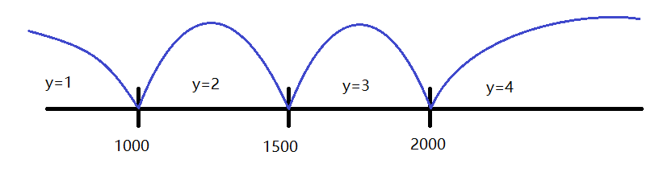

例4.1：菜单管理
#include<stdio.h>
void do_file(void); //函数声明
void do_edit(void); //函数声明
void do_view(void); //函数声明
int main(void)
{
int choice; //变量声明
printf("--------------Menu--------------\n");
printf(" [1] File.\n");
printf(" [2] Edit.\n");
printf(" [3] View.\n");
printf(" [0] Quit.\n");
printf("Input your command [0--3]:");
scanf("%d", &choice);
if(choice>=0 && choice<=3){
switch(choice){
case 1: do_file(); break;
case 2: do_edit(); break;
case 3: do_view(); break;
case 0: printf("Bye!\n"); return 0;
}
}else{
printf("The input number must between 0 -- 3. \n");
}
return 0;
}if语句if语句举例例4.2：输入两个实数，按从小到大的顺序输出这两个数
#include<stdio.h>
int main(void)
{
float a,b;
printf("Input two real number:");
scanf("%f,%f", &a, &b); //输入：2.6,-3.2
if(a>b){
//如果a 大于 b ， 则交换二者
float t=a; a=b; b=t;
}
printf("%5.2f, %5.2f\n", a, b); //输出: -3.2, 2.6
return 0;
}if语句的一般形式if(表达式)语句1 [else 语句2 ]
[ ]部分可以省略表达式的值有两个：
0-- 假, 执行语句1非0（1, 12.55, 'a'等）-- 真, 执行语句2;结尾），若有多条语句，也该用{ }包括起来组成复合语句，
if(a < b) max=b; else max=a;if(a < b){int t = a; a = b; b = t; }else对应的是 与最近的上一个if , 比如:

if(a < 1000)
y=1;
else if (a > 2000)
y=4;
else if (a < 1500)
y=2;
else
y=3;#define FALSE 0
#define TRUE !FALSE, 但在实践中，由于各个不同编程人的自由发挥，导致很混乱bool类型变量, 需要包含stdbool.h文件，然后在程序中可以使用bool定义变量，两个常量true, false#include<stdbool.h>
#include<stdio.h>
int main(void)
{
int a;
printf("input a week number:"); scanf("%d", &a);
if(a < 1 == true){
printf("error.\n");
}
else{
bool result = a > 1 && a < 7 ;
....
}
}<<=>>===!=0表示假， 虽然C语言中以非0为真，但是当关系运算出结果时，一般编译器会指定用1表示真，参考下面的例子：
if(3)printf("this is true.\n");
else printf("this is false.\n");, 输出:this is true.printf("%d\n", 3<4);, 输出:1int a=30; if( 50>a>10 )这个结果并不会如你所愿，50>a -->1(真）, 1>10 --> 0(假)==的时候少写了一个=, 就可能出错: #include<stdbool.h>
#include<stdio.h>
int main(void)
{
int a;
printf("input a number:"); scanf("%d", &a);
if(a=0){ //应该：if( a== 0)
printf("error.\n");
}
else{
printf("let us do something greate!\n");
....
}
}#include<stdbool.h>
#include<stdio.h>
int main(void)
{
int a;
printf("input a number:"); scanf("%d", &a);
if( 0==a ){ //就算少写一个=， 变成 0=a, 由于0不能是左值，所以会在编译时就检查出来
printf("error.\n");
}
else{
printf("let us do something greate!\n");
....
}
}int a=30;
if( 50 > a > 10 ){
...//真
}else{
...//假
} 50 > a == 1 , 1 > 10 == 0 (假)，正确的做法是改为逻辑表达式：if ( 50 > a && a > 10) ...| 运算符 | 含义 | 举例 | 说明 |
|---|---|---|---|
| && | 逻辑与 | a && b | 如果 a、b都为真，则结果为真，否则为假 |
| || | 逻辑或 | a || b | 如果 a、b有一个为真，则结果为真，否则为假 |
| ! | 逻辑非（取反） | !a | 如果 a为真，则结果为为假, 反之为真 |
!, &&和||的优先级一样；